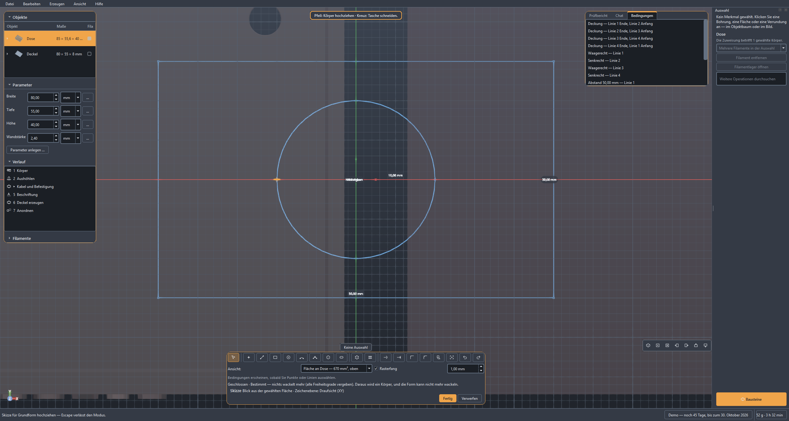
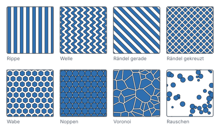

Das heruntergeladene Teil passt nicht. Mach es passend.
STL hereinziehen, Bohrung setzen, Deckel dazu, Passung aus dem Materialprofil — und vor dem Slicen steht im Prüfbericht, was beim Drucken schiefgeht. Solidon3D bearbeitet fremde Modelle, konstruiert eigene und bereitet erzeugte auf. Lokal, ohne Konto, ohne Abo; ein KI-Agent bedient dieselben Werkzeuge wie die Menüs, und die Geometrie rechnet Code, nie das Sprachmodell.
14 Tage kostenlos testen, danach Einmalkauf: 49 € zur Einführung, später 79 € — kein Abo, kein Konto, alle 1.x-Updates inklusive.
Für Windows und Linux — macOS gibt es vorerst nicht. Diese Seite ist dann auch die Download-Adresse.
Früher hineinschauen- Läuft offline
- Kein Konto
- Keine Telemetrie
- Deine Dateien bleiben deine

Kennst du das?
Die vier Sätze, die beim Drucken am häufigsten fallen — und was Solidon3D daraus macht.
-
Das Loch ist 0,2 mm zu klein, und ich habe kein CAD.
Fläche anklicken, Maß ändern. Auch in einer fremden STL-Datei — Bohrungen, Taschen und Wandstärken sind benannte Merkmale, keine Dreieckswolke.
-
Der Druck ist bei 80 % abgebrochen, wegen einer Insel.
Die Schichtanalyse zeigt sie vorher. Überhänge, Inseln, zu dünne Wände und der Stützbedarf — bevor der Slicer die Zeit verbraucht.
-
Der Deckel klemmt. Beim dritten Versuch passte er.
Passungen aus dem Materialprofil. Spiel, Presssitz oder bündig werden aus einer einmal gedruckten Kalibrierleiter abgeleitet, nicht geschätzt.
-
Das Teil ist 40 mm zu groß fürs Bett.
Teilen und verstiften in einem Schritt. Auto-Split legt Passstifte, Bohrungen und die zugehörigen Passungen gleich mit an.
Drei Wege zum Teil
Alle drei führen in dieselbe Szene, denselben Verlauf und denselben Prüfbericht. Du entscheidest je Teil, nicht je Programm.
Fremdes Modell ändern
Datei ablegen, Prüfbericht lesen, Fläche oder Bohrung anklicken — dann im Chat sagen, was werden soll, oder aus dem Kontextmenü wählen. Vorher/Nachher ansehen, übernehmen, exportieren.
Neu bauen mit Maßen
Beschreiben, was gebraucht wird. Der Agent legt Parameter an und setzt geprüfte Bausteine — Gewinde, Einpressbuchsen, Scharniere. An den Zahlen drehen, das Modell folgt sofort.
Aus Text oder Bild
Ein generiertes Mesh durchläuft automatisch die Reparaturkette, bekommt einen Prüfbericht und wird bei Bedarf geteilt und verstiftet — bis es druckbar auf der Platte liegt. Braucht ein lokal laufendes ComfyUI mit Erzeuger-Modell und eine kräftige Grafikkarte; ohne beides bleiben Weg 1 und 2 vollständig nutzbar.
Was den Unterschied macht
Alles hier ist ein Bildschirmfoto aus der laufenden Anwendung oder zeigt genau, was sie tut.
Ein Satz im Chat, ein Vorschlag, ein Undo
Der Agent bedient dieselben Operationen wie die Menüs — es gibt keine Abkürzung an der Geometrie vorbei. Jeder Vorschlag zeigt, was er tun wird, bevor er es tut, und wird als Ganzes übernommen: genau eine Transaktion, die ein einziges Undo vollständig zurücknimmt.
Die Geometrie rechnet Code, nie das Sprachmodell. Jedes Maß im Vorschlag ist exakt — nichts ist „ungefähr generiert“.
Zeichnen, bemaßen — und jedes Maß darf ein Parameter sein
Linie, Kreis, Bogen, Spline und fertige Umrisse wie Langloch, Lochkreis oder Lochraster. Zehn Bedingungen halten die Zeichnung zusammen — waagerecht, rechtwinklig, tangential, symmetrisch, Abstand —, und unten steht jederzeit, was noch frei ist. Was aus dem Umriss wird, entscheidest du erst danach: extrudieren, als Tasche einschneiden, drehen, entlang eines Bogens führen oder zwischen zwei Umrissen aufspannen.
Der Umriss geht als exakte Kurve in den B-Rep-Kern. Ein gezeichneter Kreis wird ein runder Zylinder, kein Vieleck mit vielen Ecken.

Du erfährst vor dem Druck, was schiefgehen wird
Jede geöffnete Datei bekommt einen Bericht: offene Stellen, falsch orientierte Dreiecke, Wände unter zwei Extrusionsbahnen, fehlende Einheiten. Sortiert nach Fehler, Warnung und Hinweis — und jeder Eintrag springt im Modell an die Stelle, die er meint.
Jeder Befund trägt einen Handlungsvorschlag. Ein Fehler endet hier nie mit „fehlgeschlagen“.

Eine Zahl ändern — nicht das Modell neu bauen
Der Verlauf ist non-destruktiv: jeder Schritt bleibt änderbar, jede Zahl nachträglich drehbar. Wandstärke von 2,40 auf 3,60? Aushöhlen, Deckel, Bohrungen und Passungen rechnen sich neu — in derselben Reihenfolge, mit demselben Ergebnis.
Benannte Projektparameter statt Streuzahlen: eine Änderung an einer Stelle, nicht an sieben.
Mutternfalle in vier Klicks statt vier halben Stunden
Sechzehn geprüfte Bausteine — Schraubenloch mit Senkung, Mutternfalle, Heat-Set-Einpressbuchse, Gewinde, Passstift, Filmscharnier, Schnappverbindung, Magnettasche. Die Maße kommen aus einer Normteiltabelle mit 40 Einträgen, nicht aus dem Bauchgefühl.
Jeder Baustein ist über seinen ganzen Parameterbereich getestet: wasserdicht, Mindestwandstärke, keine Selbstdurchdringung.

Acht Muster, und alle davon druckbar geprüft
Rippe, Welle, Rändel gerade und gekreuzt, Wabe, Noppen, Voronoi und Rauschen — als echte Geometrie und als exaktes Gitter, nicht als abgetastetes Höhenfeld. Sonst druckt ein Rändel gerundeten Brei statt scharfer Rauten.
Vor dem Rechnen die Frage, ob das Muster auf dieser Maschine überhaupt entsteht: Stege schmaler als die Düse und Prägungen flacher als eine Schicht werden abgewiesen, nicht gerechnet.

Sehen, was der Drucker sehen wird
Solidon3D schneidet das Modell in Schichten und misst, was daraus folgt: Überhangwinkel, freischwebende Inseln, Wände unter zwei Bahnen, Brückenweiten und das Stützvolumen. Die Orientierungssuche schlägt die Lage vor, die am wenigsten davon erzeugt.
Kein eigener Slicer — und keine gemischten Zahlen: was aus der Analyse stammt und was aus dem G-Code, steht dabei.
Zu groß fürs Bett ist kein Grund mehr, es zu lassen
Solidon3D sucht die Schnittebene, teilt das Teil und setzt Passstifte samt Bohrungen. Das Spiel dazwischen kommt aus dem Materialprofil — kein Nachfeilen, kein zweiter Versuch. Die Passung bleibt als Beziehung im Projekt und wird bei jeder späteren Änderung mitgeprüft.
Der Bauraum kommt aus dem Druckerprofil. Sechzehn sind ab Werk hinterlegt, eigene lassen sich anlegen.
Dialoge, die mitrechnen
Hinter jedem Zahlenfeld steht ein fx: statt 4,20 darf dort
schraube_m4 + spiel stehen. Toleranzen holen sich ihren
Wert aus dem Materialprofil, statt als Konstante im Modell zu
verschwinden. Vorne stehen die drei Zahlen, die man braucht — der
Rest liegt unter „Weitere Einstellungen“.
61 Operationen, alle nach demselben Muster: Menü, Kontextmenü, Kommandozeile und Chat sehen dieselbe Deklaration.

Du fängst nicht bei null an
Acht fertige Beispielprojekte liegen bei — eines je Weg, dazu Bausteine, zweifarbige Beschriftung, Kalibrierung, Druckvorbereitung und eine Dose mit Deckel, an der alles zusammenkommt. Jedes ist ein echtes Projekt mit Verlauf, nicht ein Bild in einem Handbuch.
Und ein Handbuch, das die ersten fünfzehn Minuten erklärt — in derselben Sprache wie die Oberfläche.

Was sonst noch drinsteckt
- Exakte Kanten. B-Rep-Kern für Fasen, Verrundungen und rundreisefähiges STEP.
- Zwei Farben ohne zweites Programm. Beschriftung erhaben, vertieft oder als Farbwechsel in einer 3MF-Datei.
- Übergabe an deinen Slicer. Direkt, mit den passenden Einstellungen — und sein G-Code kommt zur Gegenprobe zurück.
- Kalibrieren statt raten. Toleranzleiter, Wandstärkenleiter und Überhangfächer auf einer Platte; die gemessenen Werte gehen ins Materialprofil.
- Reparaturkette für fremde Dateien. Löcher schließen, Normalen richten, entartete Dreiecke und Splitter entfernen — bevor irgendetwas gerechnet wird.
- Messen, Schneiden, Explosion. Werkzeuge in der Ansicht, ohne die Geometrie anzufassen.
- KI lokal oder mit eigenem Schlüssel. Ollama auf dem eigenen Rechner oder ein API-Schlüssel — und ohne beides läuft alles außer dem Chat.
Was Solidon3D nicht ist
- Kein Slicer. Solidon3D analysiert und bereitet vor; die Druckdatei erzeugt weiterhin dein Slicer — an den übergibt Solidon3D direkt und liest seinen G-Code zur Gegenprobe zurück.
- Kein Cloud-CAD. Keine Konten, keine Ablage im Netz, keine Telemetrie. Projekte sind Dateien auf deinem Rechner.
- Keine Maßgarantie aus generierten Meshes. Was aus Text oder Bild entsteht, wird druckbar gemacht — maßhaltig konstruiert wird über Wege 1 und 2.
- Die KI bringt ihre eigenen Kosten mit. Der Chat läuft mit eigenem API-Schlüssel — die Modellnutzung rechnet der Anbieter ab, typisch sind Centbeträge je Vorschlag. Kostenlos geht es lokal über Ollama; ein taugliches Modell (ab etwa 14 Milliarden Parametern) braucht dafür eine Grafikkarte mit 16 GB Speicher.
Einmal kaufen, behalten
Kein Abo, kein Konto, keine Funktion, die nach zwölf Monaten aufhört zu funktionieren.
Einmalig, inklusive aller 1.x-Updates. Version 1.0 erscheint 2026.
Früher hineinschauen- 14 Tage vollständig testen. Ohne Einschränkung: keine Wasserzeichen, keine Exportsperre, keine gesperrten Funktionen.
- Eine Lizenz, alle deine Rechner. Sie ist an dich gebunden, nicht an ein Gerät — Arbeitsplatz, Notebook, Werkstattrechner.
- Keine Aktivierung über das Netz, kein Konto. Der Schlüssel wird auf deinem Rechner geprüft. Wir erfahren nicht, wann und wo du arbeitest.
- Gewerbliche Nutzung inklusive. Was du erzeugst, gehört dir — verkaufen, veröffentlichen, lizenzieren. Auch mit Bausteinen aus der Bibliothek.
- Deine Projekte bleiben lesbar. Eine ZIP-Datei mit JSON darin, Export nach STL, 3MF, OBJ, PLY und STEP.
- Entschieden wird vor dem Kauf. Vierzehn Tage vollständig testen, dann zahlen. Dazu das gesetzliche Widerrufsrecht — wer den Schlüssel sofort einlösen will, verzichtet darauf, wie bei jedem digitalen Kauf.
Systemvoraussetzungen
| Betriebssystem | Windows 10/11 (64 Bit) oder Linux |
| Speicherplatz | rund 750 MB installiert, Download rund 255 MB |
| Chat (optional) | eigener API-Schlüssel (laufende Kosten beim Anbieter) oder Ollama mit einem Modell ab etwa 14 Milliarden Parametern — das braucht eine Grafikkarte mit 16 GB Speicher |
| Generieren (optional) | lokal laufendes ComfyUI mit Erzeuger-Modell und kräftiger Grafikkarte |
| Weiteres (optional) | OpenSCAD, ein Slicer — alles wird gefunden oder angegeben, nichts davon ist Pflicht |
Häufige Fragen
Brauche ich CAD-Erfahrung?
Nein. Weg 1 kommt mit Anklicken und einem Satz im Chat aus, Weg 2 mit Beschreiben und Zahlendrehen. Wer Skizzen mit Zwängen zeichnen will, kann das — muss es aber nicht.
Muss ich eine KI benutzen?
Nein. Der Chat ist ein Weg von dreien. Ohne Schlüssel und ohne Ollama bleibt alles außer dem Chat vollständig benutzbar — Menüs, Kontextmenüs, Kommandozeile und alle 61 Operationen.
Rechnet die KI meine Geometrie?
Nein, und das ist der wichtigste Satz auf dieser Seite. Das Sprachmodell wählt Operationen und Parameter aus — gerechnet wird jede Geometrie von Code. Jeder Vorschlag des Agenten ist genau eine Transaktion, die ein einziges Undo vollständig zurücknimmt.
Gehen meine Modelle irgendwohin?
Nur wenn du den Chat mit einem fremden API-Schlüssel benutzt — dann geht der Steckbrief der Szene an diesen Anbieter: Objekte mit ihren Maßen, die Namen der Merkmale, die Parameter und der Verlauf in Kurzform. Keine Geometrie, keine Dateien. Mit Ollama bleibt auch das lokal. Ohne Chat verlässt nichts den Rechner: keine Konten, keine Ablage im Netz, keine Telemetrie.
Welche Formate liest und schreibt Solidon3D?
Gelesen werden STL, 3MF (auch als Baugruppe), OBJ und GLB, dazu
STEP über den B-Rep-Kern. Geschrieben werden STL, 3MF — mit
Farbwechsel und Plattenbelegung —, OBJ, PLY, GLB und STEP; STEP steht
im Exportdialog, sobald ein Körper es tragen kann. GLB ist das Format
zum Herzeigen: Farben und Name reisen mit, und der Empfänger dreht
das Teil im Browser. Ein Projekt ist eine
ZIP-Datei mit project.json darin: auch ohne Solidon3D
zu öffnen.
Läuft das auf einem Mac?
Nein, vorerst nicht. Es gibt Solidon3D für Windows und Linux; eine macOS-Fassung ist keine Frage der Technik, sondern eine Entscheidung über Signatur und Pflege einer dritten Plattform. Wenn du eine brauchst, schreib uns — das zählt.
Funktioniert das mit meinem Drucker?
Sechzehn Profile sind ab Werk hinterlegt, darunter Elegoo, Bambu Lab, Prusa, Creality, Anycubic und Sovol. Eigene lassen sich anlegen — gebraucht werden Bauraum, Düse und Schichthöhe. Für die Passungen kommt einmal Kalibrieren dazu.
Was passiert nach Version 1.x?
Alle 1.x-Updates sind im Kauf enthalten. Eine spätere Hauptversion wäre ein neuer Kauf — deine gekaufte Fassung läuft weiter, sie hört nicht auf zu funktionieren, und deine Projekte bleiben lesbar.
Das nächste Teil, das passt
Version 1.0 erscheint 2026. Wer früher hineinschauen möchte, schreibt eine Zeile — es antwortet ein Mensch.
support@solidon3d.de Erst das Handbuch lesen